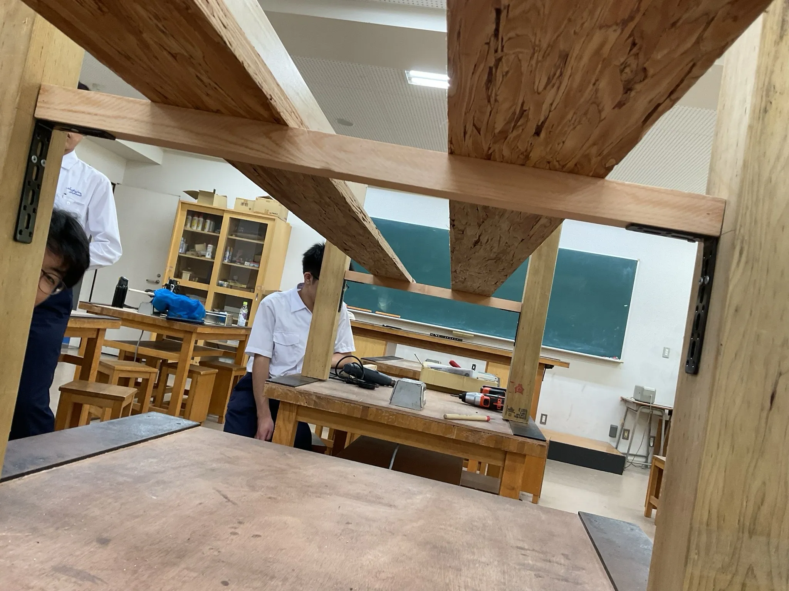

2024年11月3日(日)
9:00〜15:30
@大阪星光学院中学校・高等学校
9:00〜15:30
@大阪星光学院中学校・高等学校
あと???日
LATEST BLOG
| 10/28 | SF2024現場レポート(10.28) |
| 10/27 | Web版パンフレットされました！ |
| 10/27 | 星光アミューズメント課インタビュー(後編) |
| 10/26 | 星光アミューズメント課インタビュー(中編) |
| 10/25 | 星光アミューズメント課インタビュー(前編) |
| 10/24 | 運営委員に聞く(第2回) |
| 《全てのブログをみる》 | |
|---|---|
INTRODUCTION
What is "SF"?

スクールフェア略してSFは大阪星光学院のいわゆる文化祭であり星光生がかなりガチになる行事である。
毎年、定番の射的ゲームや食品の販売など様々なブースが準備されており、企画によっては1月から準備するものもある。
ここ最近では木材を使った大型企画や有名ミュージカル作品を再現した演劇など、大掛かりな企画が多く見られる。
それほどの情熱が注がれたSFが楽しくないわけないだろう。
What is "Seiko"?

大阪星光学院は「世の光であれ」を校訓に約1000人の学生が共に学ぶ学舎(まなびや)である。
南部合宿や黒姫山荘合宿を通じて一つ屋根の下で生活するため学生たちの絆は卒業後も強い。
また男子校ということもあってか体育祭やSFなど、行事の時のエネルギーは凄まじい。
先生方との距離も近く、生徒が気さくに話しかけることができる。先生方も行事には全力で取り組んでおり、生徒と同様に盛り上がっている様子が多く見られる。